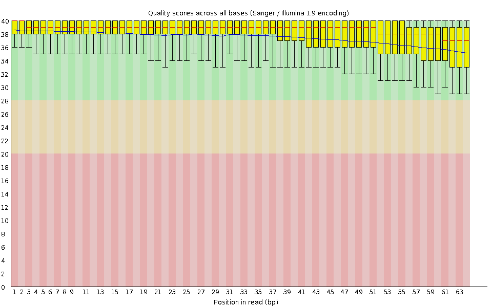
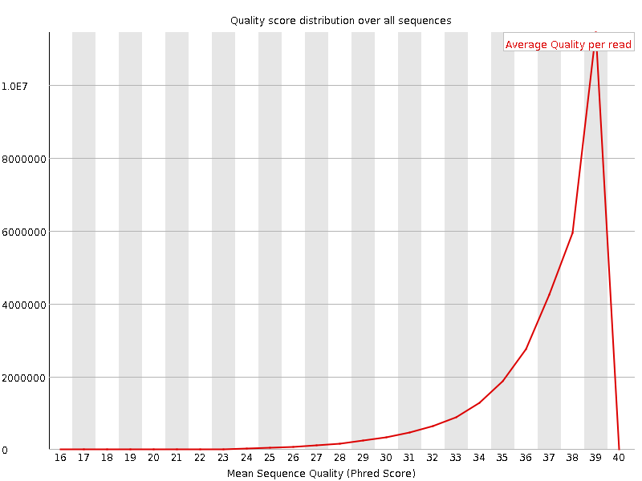
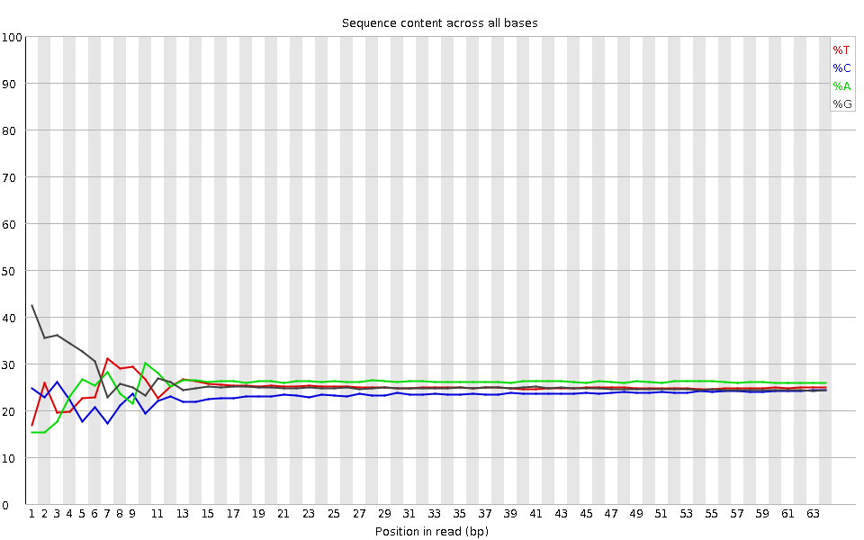
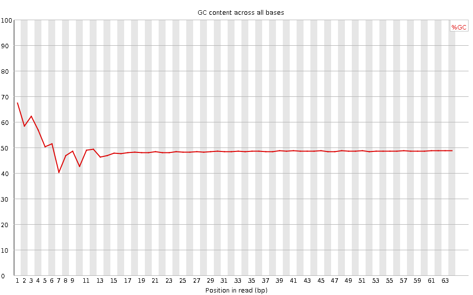
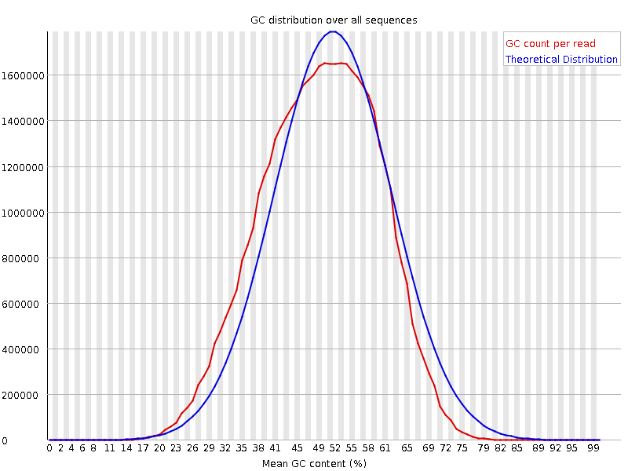
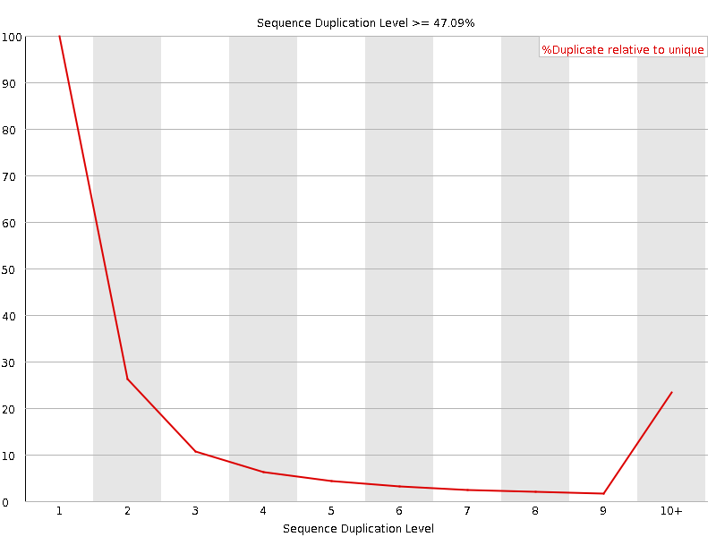
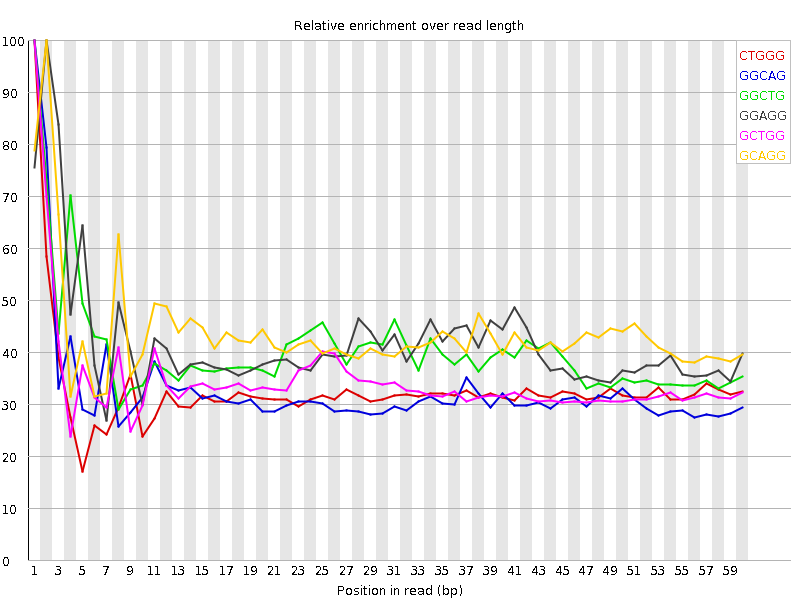

![[OK]](Icons/tick.png) Basic Statistics
Basic Statistics
| Measure | Value |
|---|---|
| Filename | SRR307909_pe_1.f.fastq |
| File type | Conventional base calls |
| Encoding | Sanger / Illumina 1.9 |
| Total Sequences | 30668914 |
| Filtered Sequences | 0 |
| Sequence length | 64 |
| %GC | 49 |
Per base sequence quality

Per sequence quality scores

![[FAIL]](Icons/error.png) Per base sequence content
Per base sequence content

Per base GC content

![[WARN]](Icons/warning.png) Per sequence GC content
Per sequence GC content

Per base N content

Sequence Length Distribution

Sequence Duplication Levels

Overrepresented sequences
No overrepresented sequences
Kmer Content

| Sequence | Count | Obs/Exp Overall | Obs/Exp Max | Max Obs/Exp Position |
|---|---|---|---|---|
| CTGGG | 4664110 | 2.5040271 | 7.6518664 | 1 |
| GGCAG | 4461715 | 2.3247147 | 7.1088605 | 1 |
| GGCTG | 4275825 | 2.2955678 | 5.691265 | 1 |
| GGAGG | 4862430 | 2.2841022 | 5.4314733 | 2 |
| GCTGG | 4253105 | 2.2833703 | 6.5977197 | 1 |
| GCAGG | 4294530 | 2.2376056 | 5.1182427 | 2 |
| GGGAG | 4314765 | 2.0268393 | 6.64257 | 1 |
| GGGCA | 3725700 | 1.9412243 | 6.37842 | 1 |
| GGCCA | 3310410 | 1.9131777 | 5.081025 | 1 |
| TGGGG | 3913155 | 1.8940507 | 6.446294 | 1 |
| GGGGA | 3525465 | 1.6560696 | 8.471616 | 1 |
| GGGAA | 3472940 | 1.6387242 | 5.384243 | 1 |
| GTGGG | 3353700 | 1.6232625 | 8.039208 | 1 |
| GGGTG | 3236430 | 1.5665013 | 5.3315434 | 2 |
| GGGCT | 2908325 | 1.5613964 | 5.1138606 | 3 |
| GGGGG | 3332550 | 1.5584484 | 8.714179 | 1 |
| GGGGC | 2854025 | 1.4804003 | 5.650733 | 2 |
| GGGGT | 2931860 | 1.4190829 | 6.3218513 | 1 |
| GTGGA | 2466075 | 1.1989948 | 5.0420427 | 1 |
| CGGGG | 1603910 | 0.83195806 | 7.569428 | 1 |